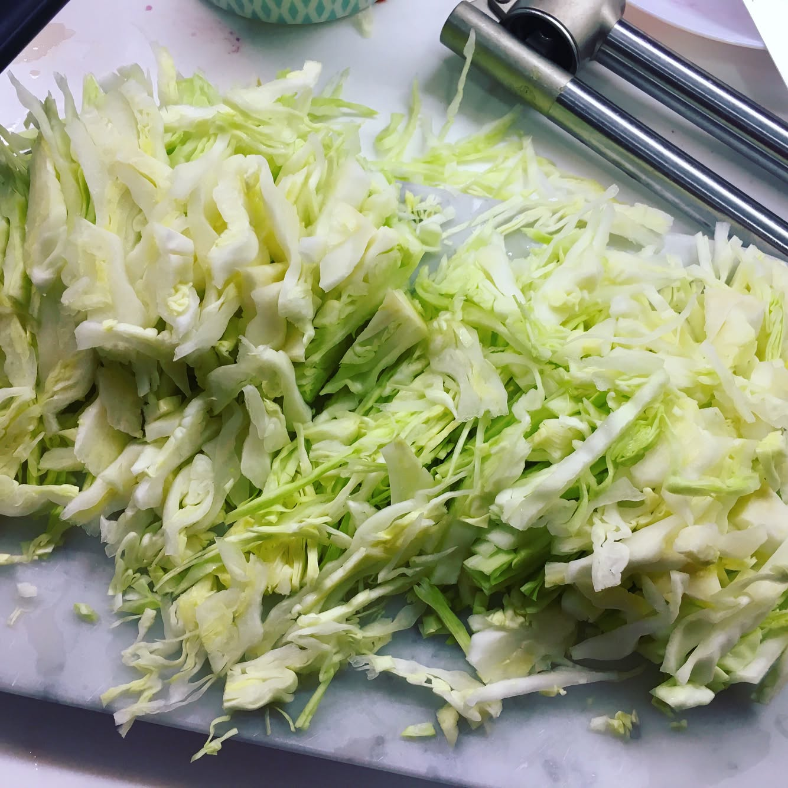
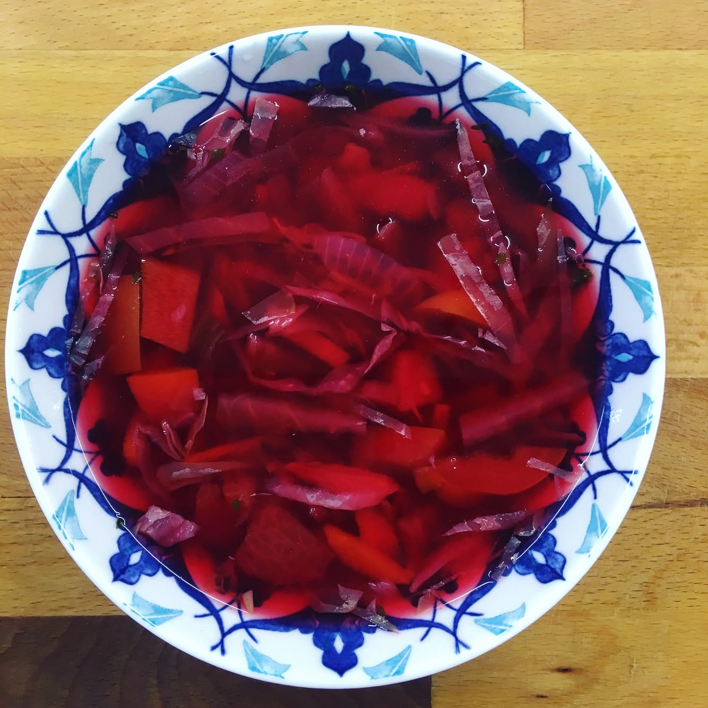

Cooking borsch - traditional Ukrainian soup 🍲😋. I love it because it has a great mix and balance of amino acids, group of vitamins B, vitamin C and K, minerals, beta carotene. It is a great source of fiber! Eating borsch will help you detox your body and nourish it with valuable micro-elements from vegetables. The mix of nutrients makes borsch a good cholagogue, cleans liver and blood. The best for your health borsch is the one that's made on vegetable broth. It is super light and nourishing. Borsch made on chicken breast broth is also light and delicious but better avoid meat broths, especially bone broths. ------- #triathlon #ironmantri #healthyfood #sportnutrition #running #swimbikerun #dietfood #cervelo #orbea #specializedbikes #giantbikes #canyonbikes #bmcbikes #boardmanbikes #ironmantraining #marathontraining #veggies #veganfoodshare #borsch #borsch #borscht
2017-05-01 11:03:29
Back to main page